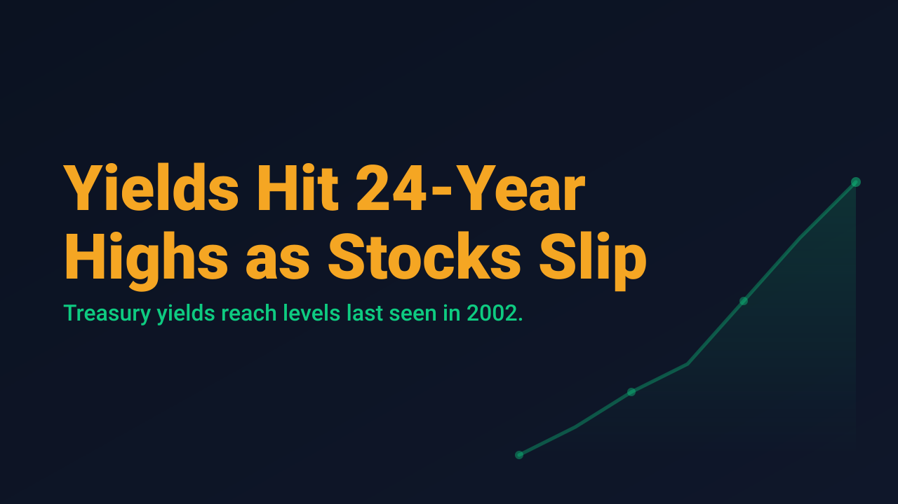
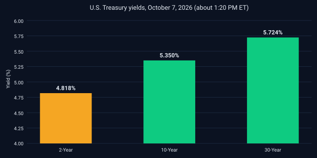

Yields Hit 24-Year Highs as Stocks Slip From Records

Treasury yields reached levels last seen in 2002 on Wednesday, pulling the major indexes back from record highs. At 12:31 PM EDT, according to Yahoo Finance, the Dow Jones Industrial Average stood at 51,180.15, down 341.13 points or 0.66%. The S&P 500 was at 7,794.44, down 24.49 points or 0.31%, and the Nasdaq Composite was at 27,465.42, down 134.47 points or 0.49%. The pullback followed record closes on Tuesday.
The driver was the bond market. The 10-year Treasury yield rose to 5.36%, its highest level since April 2002, while the 30-year yield climbed to 5.73%, the highest since May 2002. TheStreet reported the 2-year yield at 4.818% in the afternoon. Oil added to the pressure, with Brent crude above $101 per barrel and WTI near $90. Investors were also waiting for the 2 PM ET release of the Federal Reserve's September meeting minutes, and TheStreet cited market pricing of roughly a 20% probability of a 25 basis point hike later this month.

Participation was weaker beneath the surface. The Russell 2000 was down 1.41% in the same session in which the S&P 500 fell 0.23%, which suggests smaller companies, with more rate-sensitive financing, absorbed more of the move. Yahoo Finance also noted that the records "belie a highly concentrated market," with the top three holdings accounting for roughly a fifth of the S&P 500. Single-stock reactions were sharp: Constellation Brands fell about 5% despite beating earnings expectations, and Webull dropped about 20% after a congressional report raised national security concerns.
Options data from Tuesday's session, before the yield move, showed a calm backdrop. Schwab reported the VIX at 15.07, and VIX option volume of 720,191 contracts with calls outnumbering puts by better than 4 to 1. That is a snapshot of positioning before the rise in yields, not a forecast, and it is worth watching whether volatility pricing adjusts if long-dated yields keep rising.
Rising long-term yields raise the hurdle for equity valuations, and a market led by a few large names has less room for error. Traders considering new positions may reasonably prefer defined risk and smaller size until the Fed's signals and the bond market settle.